Production Research
Bookbinding Notes

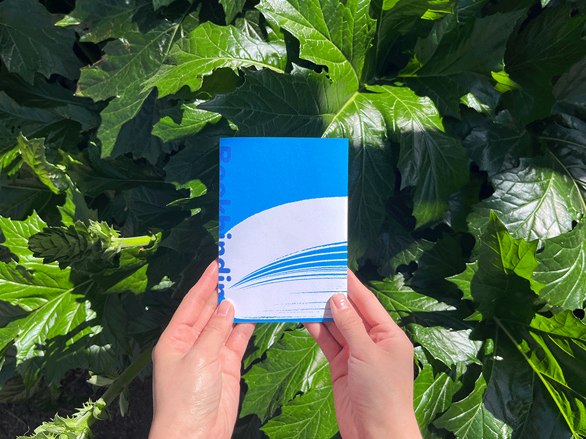
To nail my bookbinding basics, I dived into the process and techniques and translated my research into an interactive handbook. Its structure relies entirely on folding, using a highly malleable paper stock. The page sequence is carefully planned, with colour coding as visual cue. The technical process and terminology are explained in plain language and organised into tables to make the them more digestible for general audience.
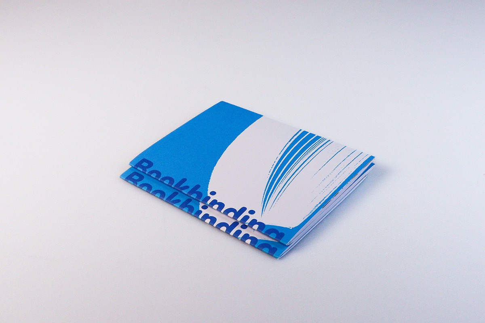
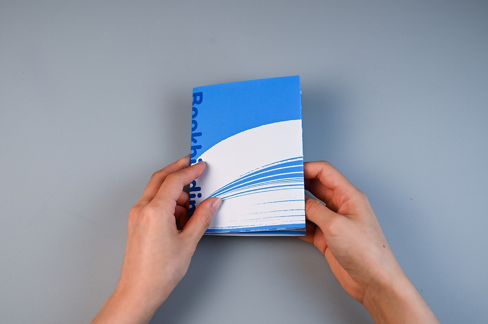
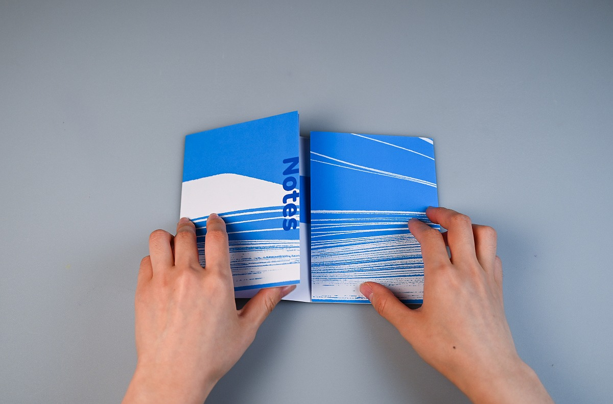
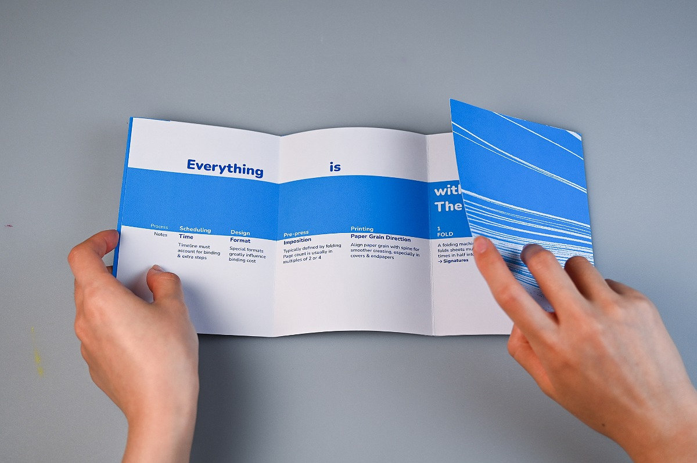
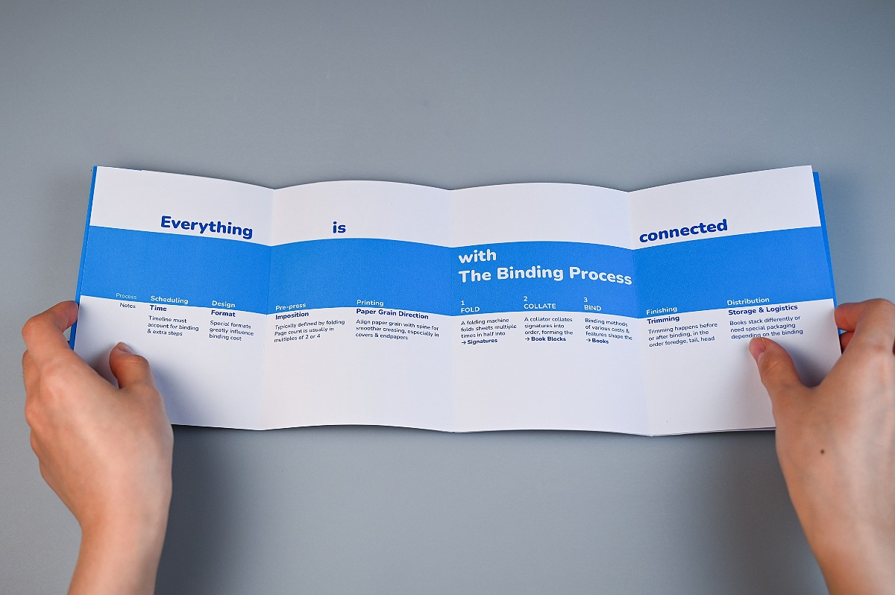
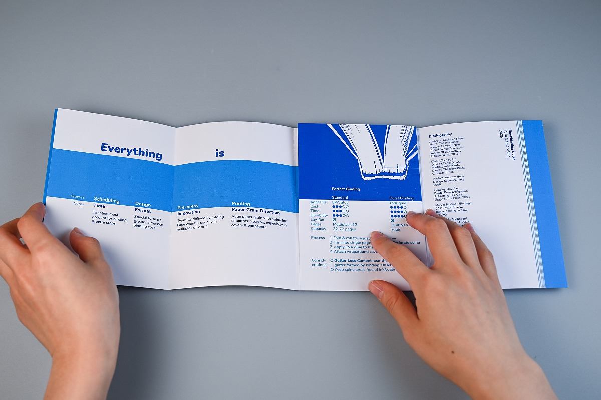
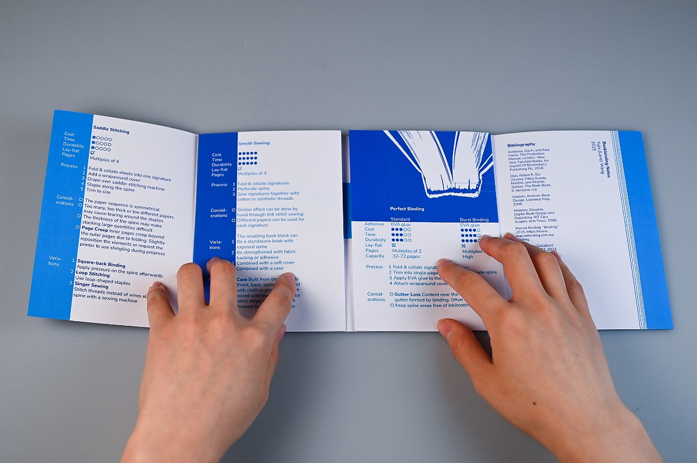
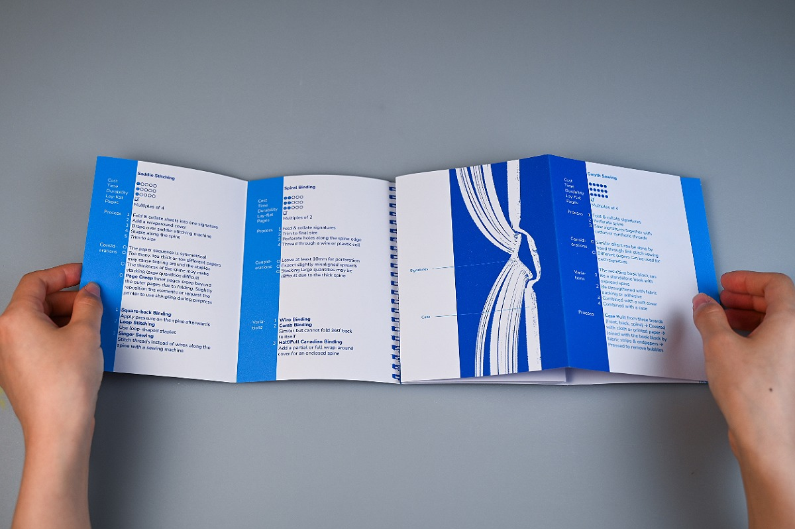
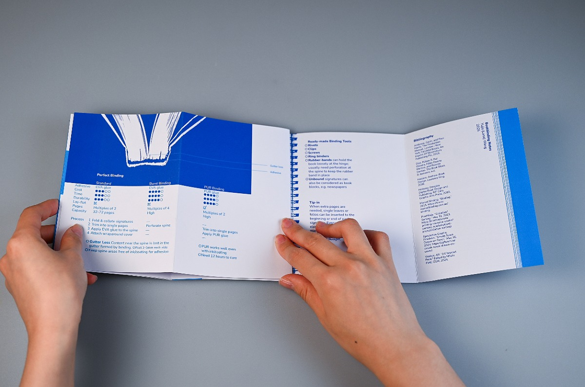
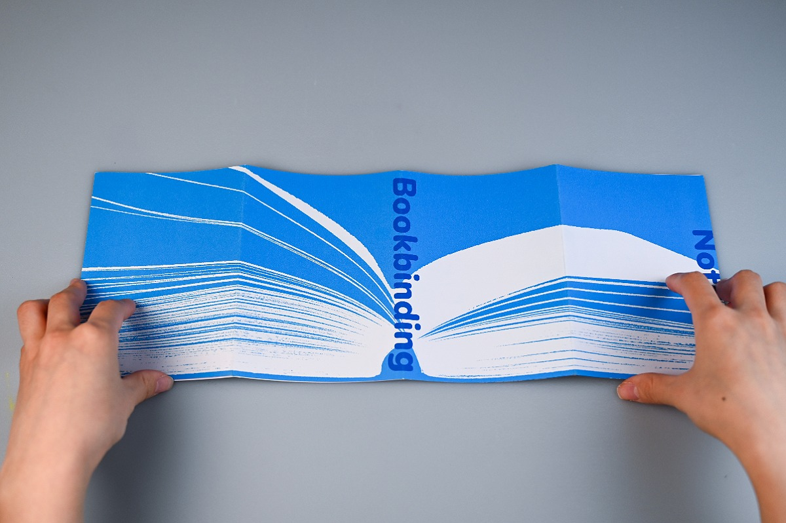
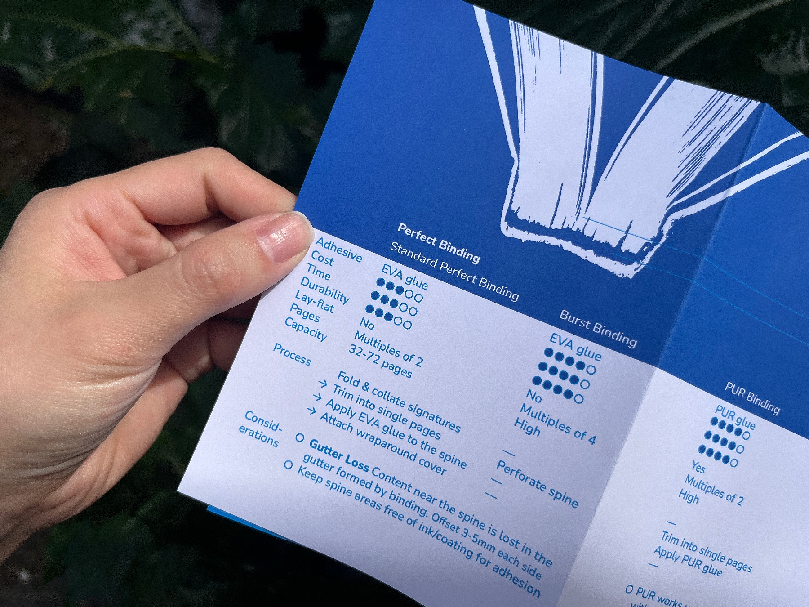
The positioning of the booklet is a detailed, practical handbook for general readers and novice designers who are interested in bookbinding. The page sequence and infographic design are the most important considerations in the layout design, since they define how the information is structured and how the readers navigate through the content.
During testing, smooth, cold white paper stock proved to provide the most clear, crisp print and tactile quality that aligns with the aim of clearly presenting information. The chosen paper stock is Mondi Color Copy 160gsm, which is smooth and flexible. The moderate thickness balances malleability and a sense of quality.
Folding defines the structure of the artifact, offering an engaging reading experience. The booklet is made from two unbound sheets, each folded three times, creating four pages per fold, which hold my three-part writing content: the spreads allow an uninterrupted process infographic, while the pages accommodates four types of binding methods.
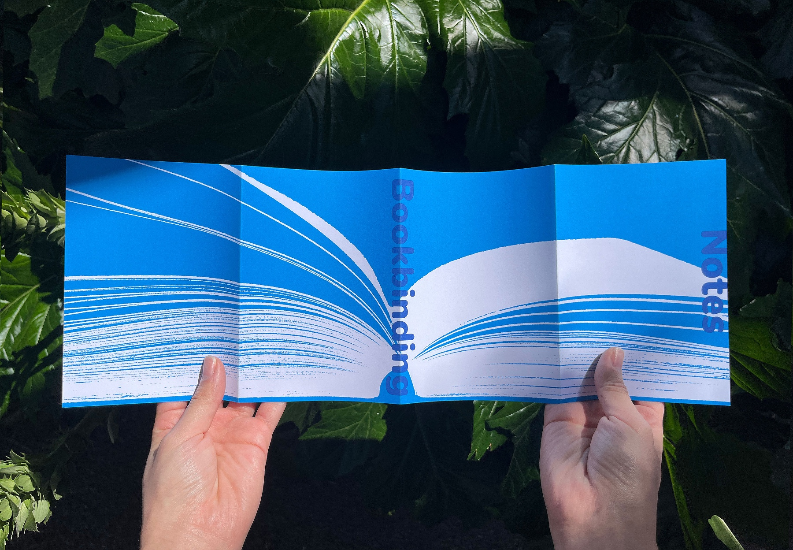